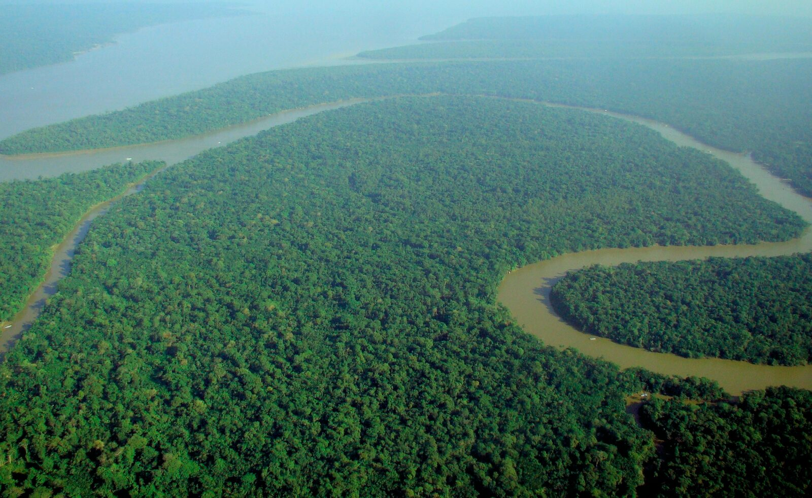
Produção, conservação e desenvolvimento das populações locais
Docente
[Nome do docente]
Discentes
[Nomes dos apresentadores]
Foto: floresta amazônica vista aérea
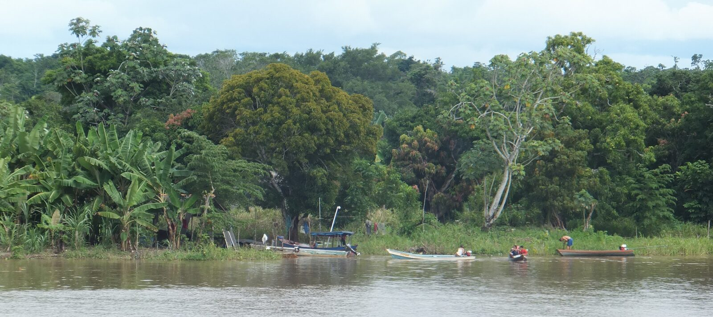
Foto ilustrativa · rio na AmazôniaA Amazônia brasileira tem grande importância ecológica, econômica e social. A exploração sustentável busca usar os recursos naturais da floresta sem comprometer sua capacidade de regeneração nem degradar os ecossistemas.
Na perspectiva da silvicultura e da agronomia, o objetivo é conciliar produção, conservação, geração de renda e desenvolvimento das populações locais.
Exploração tradicional: só retirada de recursos, sem planejamento
Exploração sustentável: planejamento, manejo, regeneração e monitoramento
É o uso dos recursos naturais de forma planejada, mantendo a capacidade de regeneração e as funções ecológicas da floresta.
"O Manejo Florestal Sustentável busca obter benefícios econômicos, sociais e ambientais sem comprometer a manutenção dos ecossistemas."
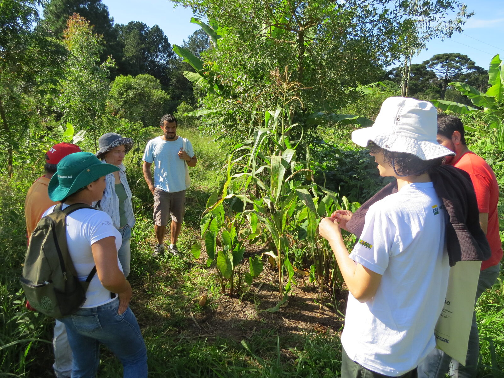
Biodiversidade, solo, recursos hídricos, habitats e regeneração natural.
Madeira, produtos não madeireiros, sistemas agroflorestais e bioeconomia.
Comunidades locais, saberes tradicionais e organizações fortalecidas.
Foto ilustrativa · sistema agroflorestal
O fio condutor de todas as estratégias de manejo apresentadas a seguir.
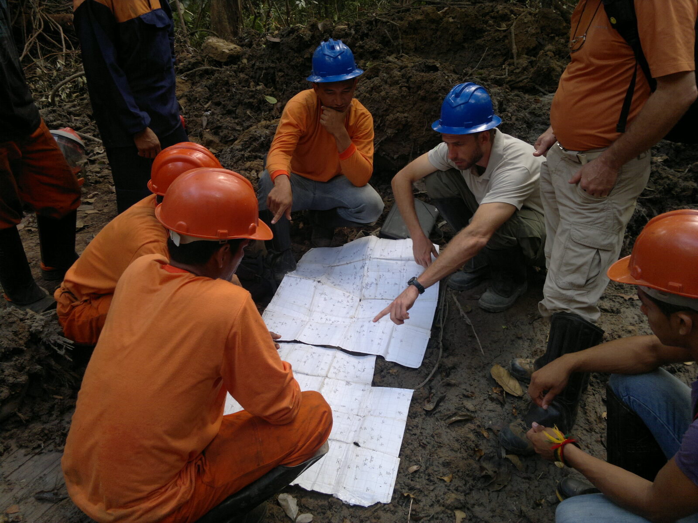
01
Manejo Florestal Sustentável
02
Sistemas Agroflorestais
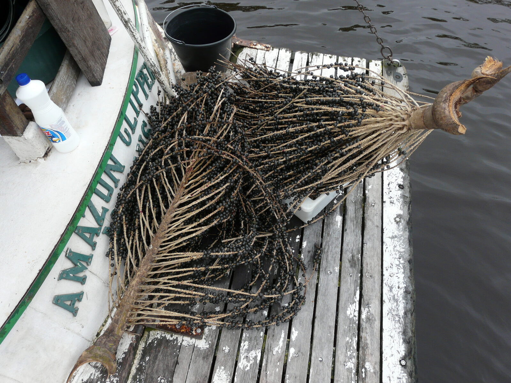
03
Produtos não madeireiros
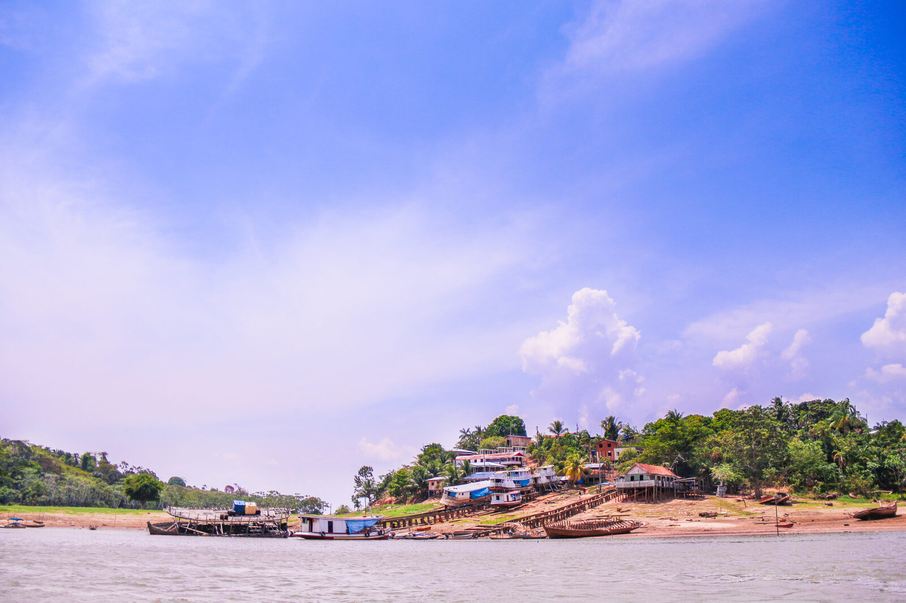
04
Manejo comunitário e bioeconomia
Utilização dos recursos da floresta de maneira tecnicamente controlada.
Inventário e planejamento da área
Seleção das árvores a explorar e controle da intensidade
Técnicas de colheita de menor impacto
Proteção das árvores remanescentes, do solo e da água
Regeneração natural e monitoramento contínuo
Integram árvores, culturas agrícolas e, em alguns casos, animais.
Diversificação da produção e geração de renda
Recuperação de áreas degradadas
Proteção do solo e ciclagem de nutrientes
Alimentos e produtos florestais, produzidos ao mesmo tempo
A floresta tem grande potencial econômico em produtos que não envolvem a derrubada das árvores.
Açaí
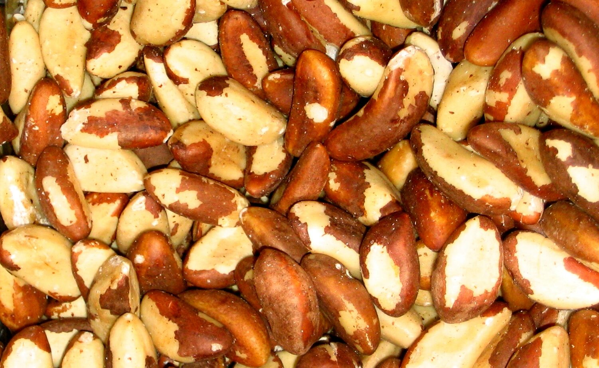
Castanha-do-brasil
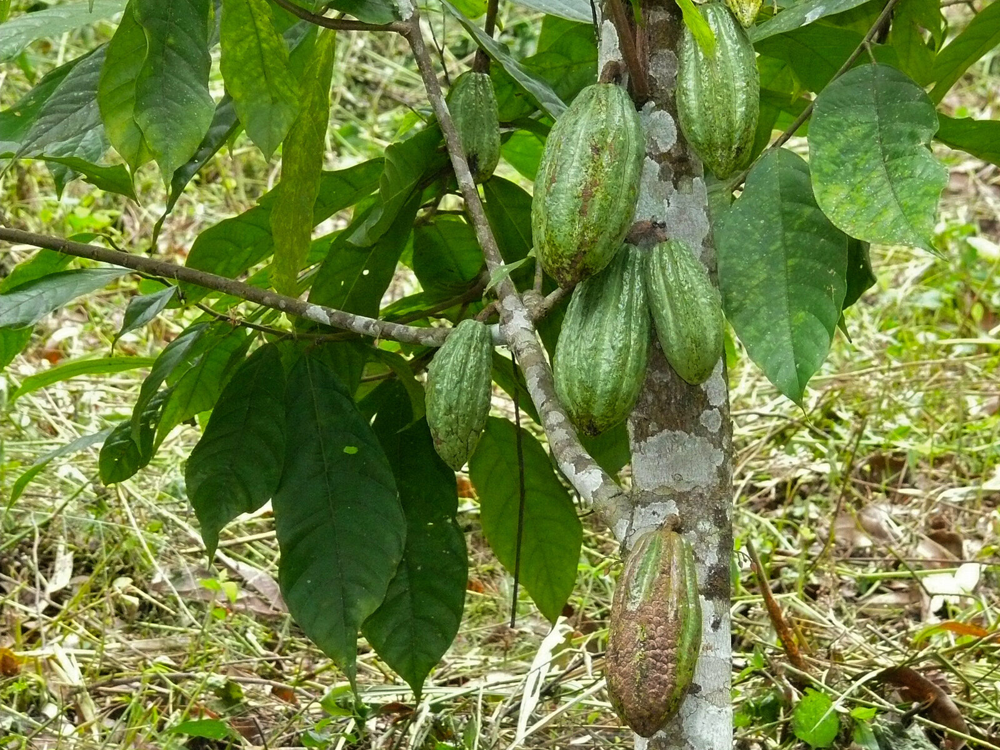
Cacau
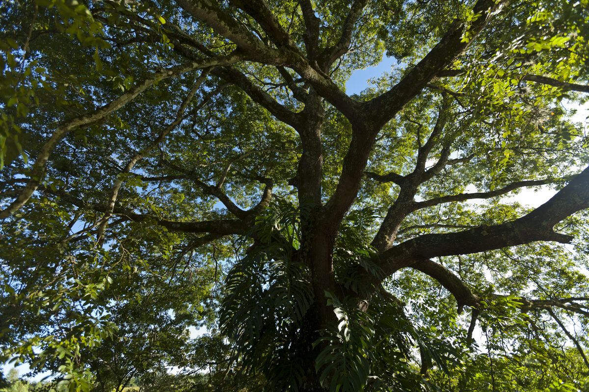
Copaíba
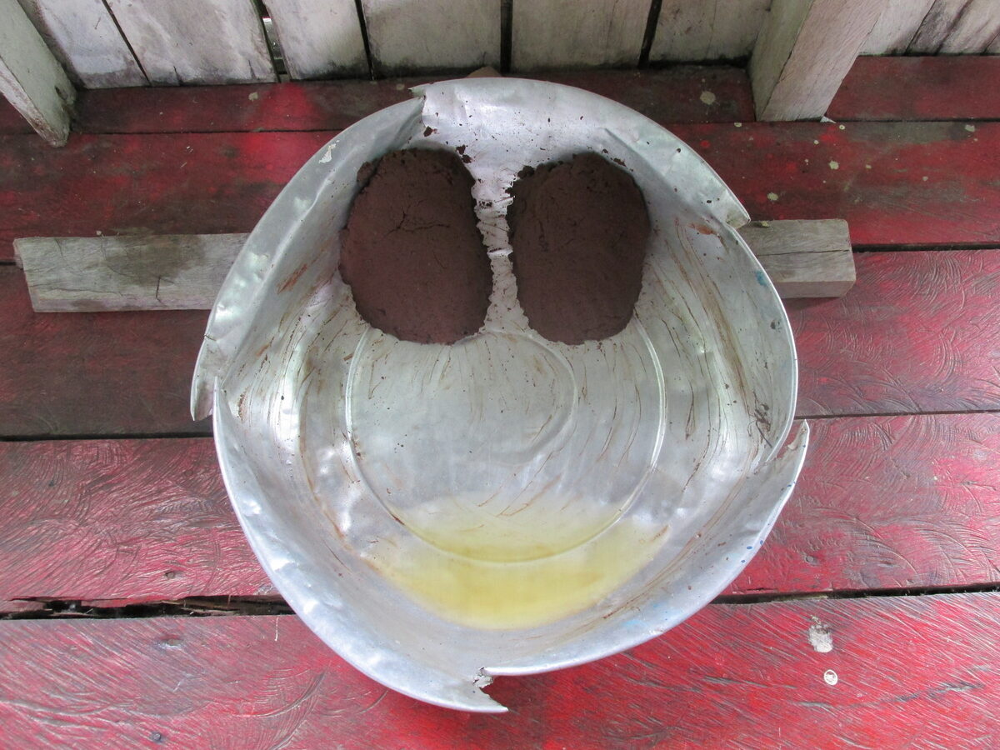
Andiroba
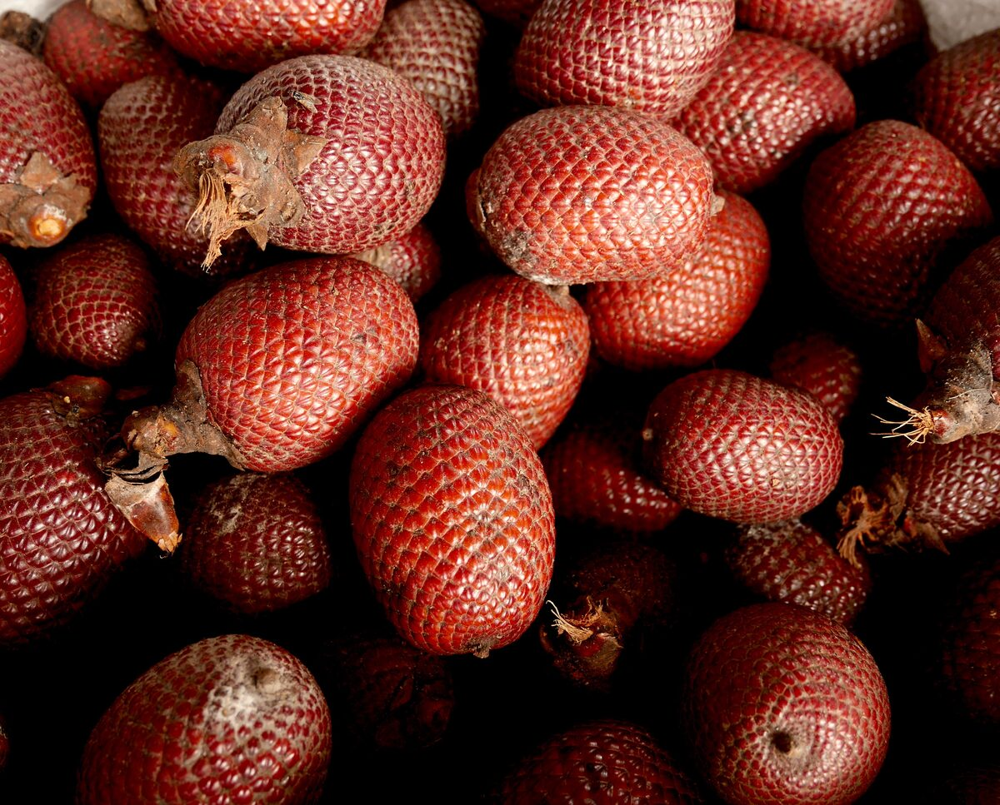
Buriti
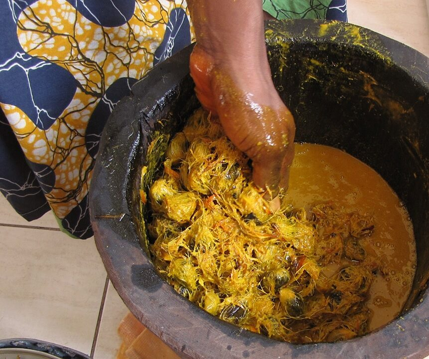
Óleos vegetais
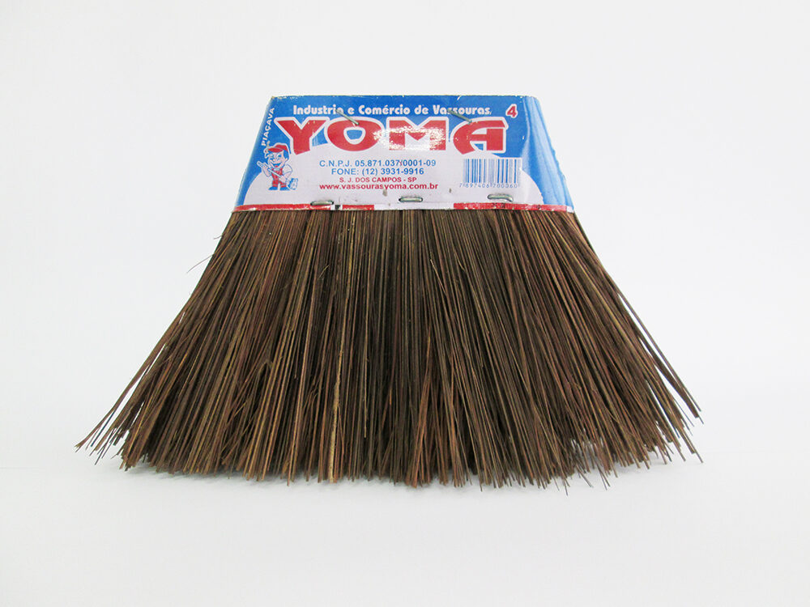
Fibras e sociobiodiversidade
Agricultores familiares, povos e comunidades tradicionais são essenciais para o uso sustentável dos recursos amazônicos.
Organização comunitária e capacitação técnica
Agregação de valor, beneficiamento e comercialização
Valorização dos saberes locais e cadeias produtivas sustentáveis
Não é uma ação isolada — é um ciclo técnico e contínuo, onde cada etapa alimenta a próxima.
Conhecer a área antes de agir
Definir estratégias de manejo
Aplicar critérios técnicos
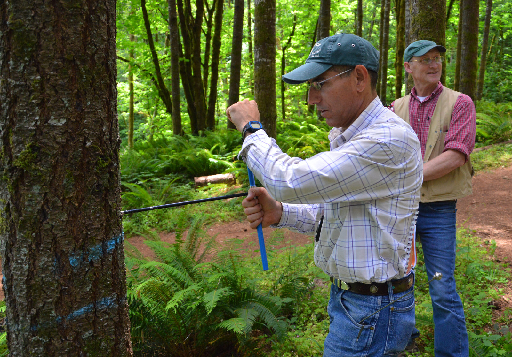
Acompanhar os resultados
Ciclo
contínuo
O monitoramento de hoje vira o diagnóstico de amanhã.
Cada volta do ciclo aprimora o manejo: erros identificados no monitoramento ajustam o próximo diagnóstico e planejamento, tornando a exploração cada vez mais precisa.
Diagnóstico — avaliar
Vegetação, solo, recursos hídricos, biodiversidade, potencial produtivo, áreas degradadas e contexto social e econômico.
Planejamento — definir
Recursos a explorar, intensidade, técnicas de manejo, áreas de produção e proteção, regeneração e SAFs quando aplicáveis.
Execução — técnicas
Exploração de impacto reduzido
Proteção das árvores remanescentes
Redução de danos ao solo
Proteção de nascentes e regeneração natural
Monitoramento — acompanhar
Regeneração e crescimento das árvores
Produtividade e biodiversidade
Condições do solo e recursos hídricos
Resultados econômicos e sociais
A exploração sustentável da Amazônia não significa deixar de utilizar seus recursos, mas utilizá-los de maneira planejada, técnica e responsável.
Para a Agronomia e a Silvicultura, o desafio é conciliar produção e conservação, usando MFS, SAFs, produtos não madeireiros e bioeconomia.
Conhecimento técnico + conservação + renda + participação social + monitoramento contínuo.
Jornada Amazônia
"O que é e como funciona a exploração sustentável na Amazônia?"
Serviço Florestal Brasileiro (SFB)
Manejo Florestal Sustentável, concessões florestais, planos de manejo e Planos Operacionais Anuais.
Embrapa
Pesquisas sobre Amazônia, Sistemas Agroflorestais, recuperação de áreas degradadas e produção sustentável.
Lei nº 11.284, de 2 de março de 2006
Dispõe sobre a gestão de florestas públicas para produção sustentável.
Manejo e exploração sustentável da Amazônia — produção e conservação. Perguntas e discussão.
Docente
[Nome do docente]
Discentes
[Nomes dos apresentadores]